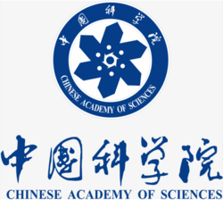

Nature
AlphaFold 3 突破：任意生物分子复合物结构端到端预测
DeepMind 与 Isomorphic Labs 联合发布，扩散生成架构覆盖蛋白—DNA—RNA—小分子组合，部署到 AlphaFold Server。
生命科学
DeepMind · Isomorphic Labs
连接科研全流程的智能工作台 · 让每一个洞察都有迹可循
从序列预测到分子对接的端到端工作流，集成 AlphaFold 3、RoseTTAFold、DiffDock 等前沿模型。
6 个新接入的 AI4S 应用，覆盖蛋白质检索、化学辅助、农业育种与疾病通路模拟。
全球中长期天气预报与气候归因建模，集成 ClimaX、GraphCast、Pangu-Weather 等基础模型。
从性质约束到晶体结构生成，集成 MatterGen、MatterSim、DeePMD-kit 等模型，加速材料筛选。
从序列预测到分子对接的端到端工作流。
本周新增 6 个 AI4S 应用。
全球中长期预报与气候建模。
性质约束到晶体生成。
150 亿规模蛋白质序列检索引擎，为 AI 蛋白质设计提供底层数据支撑，毫秒级响应。
跨气候、海洋、大气多源数据的地球科学智能体，辅助系统级研究与归因分析。
面向化学教学与科研的智能助手，知识溯源到权威教材与文献，可信回答与公式推导。
在虚拟环境中编排生物学实验流程，加速假设验证与现象发现，缩短实验周期。
面向作物育种的领域大模型，提供性状预测、亲本组合优化与育种方案推荐。
模拟疾病通路与药物响应，辅助靶点发现与新药研发路径设计，端到端可视化分析。
 书
书
 清
清

中 DP
DP
DeepMind 与 Isomorphic Labs 联合发布，扩散生成架构覆盖蛋白—DNA—RNA—小分子组合，部署到 AlphaFold Server。
Baker 教授因计算蛋白质设计、Hassabis 与 Jumper 因 AlphaFold 共获殊荣，AI 方法首次摘得自然科学诺贝尔奖。
MIT CSAIL 与 Recursion 联合推出，完整训练代码与权重 MIT 协议公开，研究者可本地部署与微调。
从性质约束（带隙、磁性、对称性）反向生成晶体结构，覆盖 90% 元素，材料发现周期从数年压到数月。
图神经网络在 ECMWF 高分辨率 1380 项评测中胜出 1342 项，AI 数值预报正式进入业务化阶段。
980 亿参数同时建模序列、结构与功能，设计出与已知 GFP 相似度仅 58% 但具同等光学功能的新蛋白。
把你的领域知识变成可复用的 AI 能力 — 赢奖金、算力、首发推荐位
上海人工智能实验室（上海 AI 实验室）牵头的 IEEE P3971《科学智能体系统互操作规范标准》正式获批立项
从 PDB 检索、结构比对到 AlphaFold 调用 — 11 个 SCP 工具 + 4 个 Skills 完整覆盖蛋白质设计 Agent 工作流。
Materials Project、AFLOW、PySCF、LAMMPS 一体接入 — 从性质约束生成晶体到 DFT 验证、MD 模拟的端到端流水线。
ERA5 / Copernicus / USGS 数据接入 + ClimaX / GraphCast 推理 + 可视化输出，搭建完整气候建模管线。
PubMed / arXiv / Semantic Scholar 检索 + 综述生成 + 引用脉络可视化 — 一键产出结构化研究综述。
面向科学研究的统一知识查询服务，集成生命科学、地球科学、材料科学、数学物理等多学科知识图谱，支持多学科知识检索、实体关系查询与领域知识问答。
面向药物分子筛选、设计与分析的综合性工具集，集成 Open Babel、RDKit、BioPython，支持格式转换、蛋白质结构修复、分子相似度计算与结合口袋分析。
覆盖化学、生物、材料、药物发现等领域的百余个科学计算工具体系，核心工具 DeepResearch 支持复杂科研任务的动态知识流智能搜索与结构化报告生成。
基于 AI-工具交互协议的标准化工具生态平台，整合生物医学数据库查询、科学计算、文献检索、实验设计等数百个工具，提供无缝通信通用接口。
面向多学科科研论文的统一智能检索服务，支持自然语言检索并同步返回细粒度知识图谱与原文内容，助力文献调研、知识查找与证据溯源。
面向生命科学研究的统一知识查询服务，集成生物医学、蛋白质、药物、临床等多领域知识图谱，支持跨图谱知识检索、实体关系查询与领域知识问答。
以智能体为中心的蛋白质工程 AI 基础设施，基于 Venus、ESM 等蛋白质大模型，支持突变预测、功能预测、模型训练与部署等 AI 蛋白质工程全流程操作。
基于强化学习微调的 LLM 智能体，用于科学实验流程的自动生成与执行，打通从科研设想到实验动作的全链路，实现程序化、可调度的智能湿实验操作。
为数学建模、科学计算和工程设计打造的通用函数工具库，集成数值运算、代数推导、函数拟合、统计分析、空间几何与图形计算等多项基础与进阶功能。
元生 Origene 深度集成全球最权威的蛋白质序列与功能数据库 UniProt 核心检索引擎，实现即查即用、随取随用。
面向数理科学研究的统一知识查询服务，集成物理、数学、本体等多个数理科学领域知识图谱，支持跨图谱知识检索、实体关系查询与领域知识问答。
集成分子对接、结合口袋识别、亲和力预测、ADMET 评估、蛋白质结构预测及疾病逆转状态预测等先进模型，全面支持智能化药物研发。
为化学实验、反应工程及材料科学开发的综合性工具库，集成 SMILES/InChI/CAS/SELFIES 互转、分子性质计算、逆合成路径规划、分子聚类与机器学习分类等核心功能。
面向物质科学研究的统一知识查询服务，集成材料、化学、功能材料等多领域知识图谱，支持跨图谱知识检索、实体关系查询与领域知识问答。
元生 Origene 深度集成全球权威的药品靶点发现与验证平台 OpenTargets 核心检索引擎，实现即查即用、随取随用。
面向蛋白质序列分析的专业工具服务，集成 InterProScan 和 BLAST，支持结构域识别、GO 注释和序列相似性搜索，基于 SCP 协议封装，开箱即用。
元生 Origene 深度集成全球最大开放化学信息数据库 PubChem 核心检索引擎，实现即查即用、随取随用。
面向工程结构分析、材料性能评估与失效预测的一站式工具集，涵盖应力应变计算、断裂判据分析、弹塑性参数求解、界面强度评估与残余应力分析等核心功能。
为化学实验、反应工程及材料科学开发的综合性辅助工具库，集成化学反应参数计算、溶液浓度分析、反应速率与平衡常数求解、质量守恒与能量平衡核查等核心功能。
元生 Origene 深度集成蛋白质相互作用与功能注释数据库 STRING 核心检索引擎，实现即查即用、随取随用。
专为光学系统分析与电磁场计算设计的通用工具库，集成光的传播、折射、反射、干涉及电磁波传播、电磁场参数求解、光电实验结果处理等核心计算函数。
专为科学研究、工程实践和数据驱动决策打造的实用工具库，集成数据清洗、归一化、异常值检测、数据拟合与插值、误差评估、分布分析与相关性计算等核心功能。
面向大气科学与气象数据分析的专业化计算工具集，集成 MetPy 核心算法，支持大气物理参数计算、强对流天气诊断与风能评估指标估算。
面向蛋白质组学、基因组学及生物分子设计的综合性工具库，集成蛋白质理化性质计算、DNA/RNA 序列分析、结构预测、抗体 CDR 标注、药物-靶标相互作用预测等多种核心功能。
整合基因表达、蛋白质数据、KEGG 通路富集与代谢途径，输入多组学数据，输出跨癌症基因表达报告与功能富集结果，覆盖 4 个专业数据源。
输入气象参数，计算科里奥利参数、地转风、热量指数、位温与露点，输出标准化大气科学指标，适用于气象与气候研究。
输入材料组成信息，分析聚合物成分、对称性、密度与晶格参数，输出结构化材料设计报告，整合 2 个专业 SCP 服务器。
输入关键词或主题，检索 PubMed 数据库中的科学文章与出版物，输出生物医学文献列表，快速定位研究资料。
借助 Tavily 搜索引擎，输入研究主题或临床问题，检索生物医学文献与网页内容，输出研究与临床参考信息。
输入化合物或药物名称，整合 PubChem 信息、FDA 药物数据、ADMET 预测与 ChEMBL 结构警报，输出全面的化学品安全评估报告。
输入化合物 CID 或靶标名称，整合 PubChem 测定摘要、ChEMBL 活性数据与化合物特性，输出结构化生物测定分析报告。
输入自定义分析代码或研究问题，执行计算分析、软件分析并搜索参考实现与数据集，输出可复现的计算科学结果。
输入蛋白质序列，设计丙氨酸扫描方案，计算各突变体理化特性，预测药物-靶标相互作用，输出突变体对比分析报告。
输入分子结构，综合计算分子特性、氢键、疏水性、拓扑参数与 ADMET 预测，输出全面的药物相似性评估报告。
输入化合物名称，检索并输出 SMILES 表达式、分子式、分子量与 LogP 值，快速完成化学结构基础解析。
输入肽序列，基于生成模型采样生成结构多样的新肽分子，输出候选肽分子集合，支持药物发现前期探索。
输入蛋白质序列与药物信息，综合分析蛋白质特性、药物结构、结合亲和力预测与相互作用数据，输出完整的相互作用图谱。
输入药物名称，查询 ChEMBL ATC 分类、FDA 药物信息、PubChem 化合物记录与作用机制，输出标准化药物分类报告。
输入目标分子，基于生成模型采样生成结构相似但多样化的新分子，输出候选分子集合，加速先导化合物探索。
输入药物与靶标名称，从 ChEMBL 获取药物、PDB 获取靶标结构，执行分子对接并预测 ADMET，输出结构药理学综合报告。
输入蛋白质登录号，整合 ChEMBL 分类、UniProt 条目、InterPro 结构域与 Ensembl 生物型，输出多维度蛋白质分类报告。
输入药物名称或 ID，整合 ChEMBL 药物警告、FDA 黑框警告、不良反应与环境警告，输出全面的药物安全情报报告。
输入分子名称，检索 ChEMBL 数据库，输出生物活性数据与化学结构信息，快速定位目标化合物的研究记录。
输入细胞系 ID 或靶标名称，检索 ChEMBL 细胞系信息、测定数据与活性结果，输出结构化细胞生物学测定分析报告。
输入抗体靶点登录号，整合 UniProt 蛋白质信息、InterPro 结构域、蛋白质特性与 ChEMBL 生物治疗数据，输出靶点全景分析报告。
输入分子结构，计算基本信息、疏水性、氢键、电荷与分子复杂性，输出完整的物理化学性质图谱，支持先导化合物优化。
输入两个化合物名称，获取 SMILES 并分析结构，计算相似度并核查 PubChem 记录，输出结构对比报告，适用于化学信息学研究。
输入疾病或基因信息，整合 TCGA 差异表达、NCBI 基因元数据、OpenTargets 关联与 ClinVar 临床数据，输出精准医学生物标志物发现报告。
书
清
DP
支持 Claude Desktop · Cursor · Continue · Windsurf — 装完即用，不用写代码
挑选 Skill · 配置输入 · 一键运行 — 从 PDB 解读到分子对接，全在一个文件里
由 上海人工智能实验室（上海 AI 实验室）牵头的 IEEE P3971《科学智能体系统互操作规范标准》正式获批立项 — 作为 IEEE 首个面向科学智能体的国际标准，本社区的 SCP 协议正是基于 Science Context Protocol（SCP） 蓝本开发的社区开放实现。
IEEE P3971 规定了科学智能体系统的互操作性要求，涵盖对互操作性及其执行框架基本组件的标准化描述，适用于科学智能体系统（包括人工智能体及智能湿实验室设备）的提供方、运营方及用户。 IEEE 科学智能标准工作组同步组建，上海 AI 实验室担任主席单位 — 实验室此前已以 SCP 为蓝本编写 《科学实验智能体系统互操作技术要求》团体标准，进一步联合工作组加速推进 IEEE P3971 编制工作，为全球科学智能体互联互通、科研资源开放共享构建统一技术框架与规范依据。
—
书清DP支持 Hugging Face · Zenodo · Figshare 协议 — 装完即用，无需手动切片
自动生成 DOI · 符合 FAIR 原则 · 永久存档与版本管理
238M 篇论文 · 6 大学科 · 实时索引 — 多模式智能检索，从一个关键词出发，串起一条完整科研脉络
PDF / Word / PPT / 图片 一键解析 · 复杂表格与公式精准还原 · 高保真输出 Markdown / JSON / LaTeX，为 RAG 与 Agent 工作流提供结构化数据底座。
全球科学知识基础设施 — 跨越六个世纪的学术资产
自 16 世纪至今的学术文献、古籍手稿、全球专利与 AI-Ready 全文数据 完成统一索引、交叉引用与语义对齐 — 为论文搜索、阅读与引文核验提供毫秒级检索与跨域关联能力。
为科研而生 — 按方向 5 秒启动预配好的 GPU 环境，不再写 Dockerfile
选择 PyTorch 镜像 + 8×A100 配置 + 挂载默认云盘 — 一次点击完成环境部署。
pytorch-2.4-cuda12 公共镜像/home 与 /data 卷创建卷、上传数据集、挂载到开发机 / 训练任务 — 一份数据全员复用，秒级访问。
/mnt开发机里装依赖 → 一键打包镜像 → 团队共享 — "我电脑能跑" 变 "团队都能跑"。
pip / conda 装包写一份 job.yaml 描述训练，提交到队列 — 自动 DDP / DeepSpeed 多机多卡。
job.yaml（镜像 / 资源 / 命令）cc submit job.yaml 提交图形化文件管理 — 网格 / 列表双视图 · 上传 · 共享 · 挂载到开发机
PyTorch · TF · JAX · 自定义 — 一键打包科研环境，团队共享
DDP / DeepSpeed 多机多卡 · 自动重试 · 实时日志